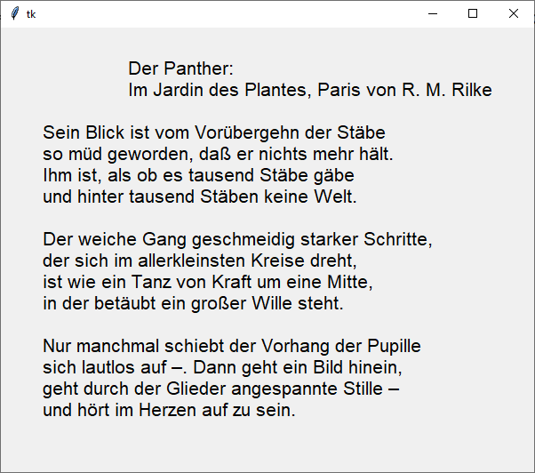

tk.Message
Ein Label speziell für mehrzeiligen Text
tk.Message erzeugen
msg = tk.Message(parent, Optionen)
| Optionsname | Beschreibung |
|---|---|
| allgemeine tk-Widget-Optionen | |
| background (bg) | Normale Hintergrundfarbe |
| highlightbackground, highlightcolor, highlightthickness | Einstellungen für den Highlightrahmen |
| padx, pady | Abstand des Widgets vom Parent, Extra Platz. Siehe auch Dimensionsangaben |
| spezielle tk.Message-Optionen | |
| aspect | Seitenverhältnis: 100 ist quadratisch, 200 ist doppelt so breit wie hoch |
| justify | tk.LEFT, tk.RIGHT, tk.CENTER:
Textanordnung im Widget |
| width | Breite in Pixeln oder anderen Dimensionen |
tk.Message kennt außerdem die Standardoptionen: anchor, borderwidth, cursor, font, foreground (fg), relief, takefocus, text und textvariable
Das folgende Programm stellt ein Message-Widget vor
import tkinter as tk
from tkinter import font
class A(tk.Tk):
def __init__(self):
super().__init__()
self.geometry('600x500')
self._createWidgets()
def _createWidgets(self):
self.grid_columnconfigure(0, weight=1)
self.grid_rowconfigure(0, weight=1)
f = font.Font(family='Helvetica', size=16, weight='normal')
msg = tk.Message(self, font=f)
msg['text']='\tDer Panther: \n\tIm Jardin des Plantes, Paris von R. M. Rilke\n\n'\
'Sein Blick ist vom Vorübergehn der Stäbe\n'\
'so müd geworden, daß er nichts mehr hält.\n'\
'Ihm ist, als ob es tausend Stäbe gäbe\n'\
'und hinter tausend Stäben keine Welt.\n\n'\
'Der weiche Gang geschmeidig starker Schritte,\n'\
'der sich im allerkleinsten Kreise dreht,\n'\
'ist wie ein Tanz von Kraft um eine Mitte,\n'\
'in der betäubt ein großer Wille steht.\n\n'\
'Nur manchmal schiebt der Vorhang der Pupille\n'\
'sich lautlos auf –. Dann geht ein Bild hinein,\n'\
'geht durch der Glieder angespannte Stille –\n'\
'und hört im Herzen auf zu sein.\n'
msg.grid(column=0, row=0, sticky=tk.W+tk.E)
if __name__ == '__main__':
window = A()
window.mainloop()Message-Methoden
Es sind die folgenden allgemeinen
Konfigurationsmethoden
bekannt: cget(…) und configure(…)